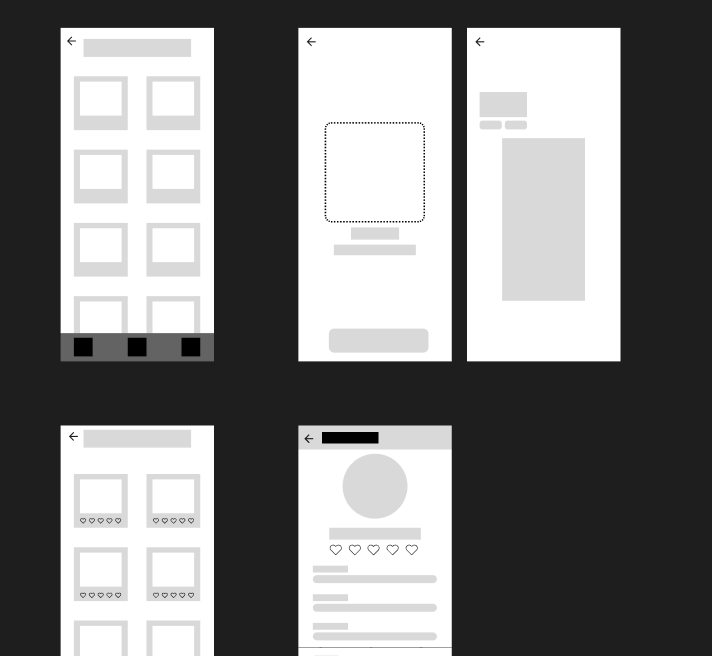

Over dit project
My Disney Friend is een interactieve mobiele AR-ervaring waarbij gebruikers een karakter kunnen kiezen en dit karakter tot leven kunnen brengen in hun eigen omgeving. Het project is ontstaan vanuit het idee om Augmented Reality toegankelijk, speels en herkenbaar te maken voor een jonge doelgroep.
De gebruiker begint op een startscherm, kiest daarna een karakter en komt vervolgens in een AR-omgeving terecht. Daar kan het karakter geplaatst worden in de ruimte en kan de gebruiker ermee interacteren door middel van tekstballonnen, knoppen en een vriendschapssysteem met hartjes.
De focus van dit project lag niet alleen op het technische AR-gedeelte, maar ook op de beleving. De app moest voelen als een vrolijke, magische en persoonlijke ervaring waarin de gebruiker echt een band kan opbouwen met het gekozen karakter.
Mijn rol
Binnen dit project heb ik zelfstandig gewerkt aan het concept, de uitwerking van de schermen, het ontwerp in Figma en de realisatie in HTML, CSS en JavaScript. Ik heb nagedacht over de volledige gebruikersflow, van het openen van de app tot het plaatsen en gebruiken van het karakter in de AR-omgeving.
Daarnaast heb ik gewerkt aan de visuele stijl van de applicatie. Hierbij heb ik gekozen voor een speelse en zachte uitstraling met lichte kleuren, duidelijke knoppen, afgeronde vormen en herkenbare interacties. Ook heb ik onderzocht hoe ik een 3D-model via webtechnieken kon tonen en hoe dit op mobiel geopend kon worden via AR.
User flow
De user flow is ontworpen om eenvoudig en logisch te blijven. De gebruiker opent de app, komt op het home scherm, kiest een karakter en gaat daarna naar het AR-scherm. Vervolgens wordt de omgeving gescand en kan het karakter geplaatst worden.
Na het plaatsen kan de gebruiker met het karakter interacteren. Door op gespreksknoppen te klikken verschijnen er reacties in een tekstwolk. Deze interacties zorgen ervoor dat het vriendschapsniveau stijgt. Op deze manier wordt de gebruiker gestimuleerd om terug te komen en verder te spelen.
Ontwerpproces
Het ontwerpproces begon met het onderzoeken van bestaande AR-ervaringen en apps waarin digitale figuren of speelse interacties centraal staan. Ik heb gekeken naar hoe zulke apps gebruikers begeleiden, hoe ze spanning opbouwen en hoe ze interactie duidelijk maken.
Daarna heb ik de schermen stap voor stap uitgewerkt. Eerst heb ik gekeken naar de basisflow: startscherm, home scherm, karakter kiezen, AR scannen en interactie. Vervolgens heb ik deze schermen visueel verder uitgewerkt in een stijl die past bij een jonge doelgroep.
In de high-fidelity uitwerking heb ik extra aandacht besteed aan sfeer, typografie, kleurgebruik en visuele feedback. De app moest direct duidelijk zijn, maar ook aantrekkelijk genoeg voelen om verder te ontdekken.

Realisatie
Voor de realisatie heb ik gewerkt met HTML, CSS en JavaScript. De verschillende schermen zijn als losse pagina’s opgebouwd, zodat de navigatie duidelijk blijft. Denk hierbij aan een startpagina, homepagina, karakterselectie, vriendschapspagina en AR-pagina.
Voor het tonen van het 3D-model heb ik gebruikgemaakt van een webviewer waarmee een GLB-model zichtbaar gemaakt kan worden. Hierdoor kon het karakter in de browser getoond worden en op mobiel worden geopend in een AR-weergave.
Daarnaast heb ik JavaScript gebruikt voor de interactie met het karakter. De gebruiker kan knoppen aanklikken, waarna de tekst in de speech bubble verandert en het vriendschapsniveau wordt bijgewerkt met hartjes.
Testen en iteraties
Tijdens het testen heb ik vooral gekeken of de schermen logisch op elkaar aansloten en of de gebruiker snel begreep wat de bedoeling was. De navigatie moest duidelijk zijn, omdat de app meerdere stappen bevat: kiezen, scannen, plaatsen en interacteren.
Een belangrijk testpunt was de AR-weergave. In de browser werkte het tonen van het model goed, maar op mobiel bleek de plaatsing en oriëntatie van het model lastiger. Het model stond niet altijd direct goed naar de gebruiker toe. Daarom heb ik aanpassingen gedaan aan de schaal, camera-instellingen en rotatie van het model.
Ook heb ik de interface aangepast op basis van gebruiksgemak. Knoppen zijn duidelijker gemaakt, de tekstwolken zijn beter zichtbaar geplaatst en de interactie met hartjes is toegevoegd om de app meer feedback en speelsheid te geven.
Belangrijkste functionaliteiten
- Startscherm met duidelijke introductie van de app
- Home scherm met toegang tot karakterkeuze en vriendschappen
- Karakterselectie met visuele kaarten
- AR-scherm waarin een 3D-karakter zichtbaar wordt
- Interacties via gesprekknoppen en tekstwolken
- Vriendschapssysteem met hartjes
- Overzicht van opgebouwde vriendschappen
- Mobielvriendelijke interface
Uitdagingen & leerpunten
Een grote uitdaging binnen dit project was het combineren van een speelse interface met een technische AR-uitwerking. Het ontwerpen van de schermen was goed te sturen, maar het werken met een 3D-model en mobiele AR bracht technische beperkingen met zich mee.
Vooral de oriëntatie van het model was een leerpunt. In de normale website kon het model goed draaien en bekeken worden, maar zodra het model via de mobiele AR-weergave geopend werd, stond het niet altijd op de juiste manier naar de gebruiker gericht. Hierdoor heb ik geleerd dat AR niet alleen om het ontwerp gaat, maar ook om modelpositie, schaal, rotatie en devicegedrag.
Daarnaast heb ik geleerd hoe belangrijk feedback is in een interactieve app. Door hartjes, tekstreacties en duidelijke knoppen toe te voegen, voelt de ervaring actiever en begrijpelijker voor de gebruiker.
Eindresultaat
Het eindresultaat is een werkend prototype van een mobiele AR-app waarin gebruikers een karakter kunnen kiezen, een AR-omgeving kunnen openen en kunnen interacteren met het karakter. De app bevat meerdere schermen, een duidelijke navigatie, een vriendschapssysteem en een visuele stijl die past bij een magische en jonge doelgroep.
Hoewel de AR-functionaliteit nog beperkingen heeft, laat het prototype goed zien hoe het concept zou kunnen werken. De belangrijkste flow is uitgewerkt en de interactie met het karakter maakt duidelijk wat de beleving van de app moet worden.
Bekijk het Figma prototype Bekijk de live demoReflectie
Tijdens dit project heb ik geleerd hoe belangrijk het is om een technisch concept begrijpelijk en aantrekkelijk te maken voor de gebruiker. AR kan snel ingewikkeld worden, maar door de flow klein en duidelijk te houden blijft de ervaring toegankelijk.
Ik vond het vooral interessant om te werken aan de combinatie van ontwerp, interactie en techniek. Het project ging niet alleen over hoe de app eruitziet, maar ook over hoe de gebruiker zich voelt tijdens het gebruiken van de app. Door het vriendschapssysteem toe te voegen kreeg de app meer persoonlijkheid en werd de interactie minder statisch.
Met meer tijd zou ik het AR-gedeelte verder willen verbeteren. Ik zou het model beter willen positioneren, meer animaties toevoegen en extra interacties maken, zoals bewegen, volgen of reageren op de omgeving. Ook zou ik uitgebreider willen testen met gebruikers om te zien of de flow duidelijk genoeg is en of de app echt uitnodigt om vaker te gebruiken.